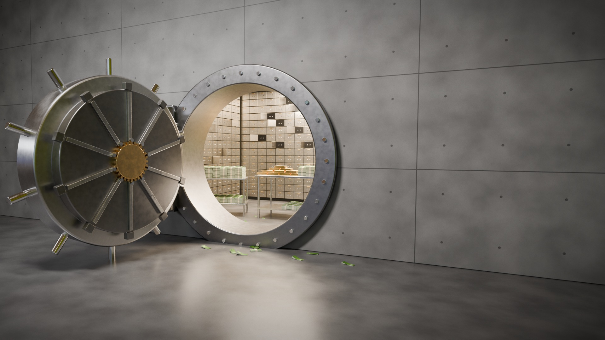

<title>Cofre Aberto MS · Foto</title>
<meta name="claude:viewport-fit-sides" content="cover">
<link rel="preconnect" href="https://fonts.googleapis.com">
<link rel="preconnect" href="https://fonts.gstatic.com" crossorigin>
<link rel="stylesheet" href="https://fonts.googleapis.com/css2?family=Archivo:wdth,wght@62..125,400;62..125,500;62..125,700;62..125,800;62..125,900&family=IBM+Plex+Mono:wght@400;500&family=Sora:wght@800&family=Inter:wght@500&display=swap">
<style>
/* Layout: abertura com a foto do cofre ocupando a tela (cofre à esquerda, título sobre a parede à direita); depois uma faixa de frase e o livro dos números. */
:root{
  --bg:#070b14;
  --fg:#eef2fa;
  --muted:#8e98ad;
  --steel:#c3c8d2;
  --accent:#f5c842;
  --accent-2:#e8a020;
  --on-accent:#0f1117;
  --gold:#e8b64c;
  --ok:#3ddc97;
  --line:rgba(195,200,210,.16);
  --glass:rgba(10,15,28,.62);
  --scrim:rgba(7,11,20,.82);
  --ease-out:cubic-bezier(.23,1,.32,1);
  --display:"Archivo","Arial Narrow",system-ui,sans-serif;
  --body:"Archivo",system-ui,-apple-system,"Segoe UI",sans-serif;
  --mono:"IBM Plex Mono",ui-monospace,Menlo,Consolas,monospace;
  color-scheme:dark;
}
html{background:var(--bg)}
body{background:var(--bg);color:var(--fg);font-family:var(--body);font-size:16px;line-height:1.55;overflow-x:hidden;-webkit-font-smoothing:antialiased}
a{color:inherit}
:focus-visible{outline:2px solid var(--accent);outline-offset:3px;border-radius:4px}
.wrap{max-width:1240px;margin:0 auto;padding-left:max(clamp(16px,4vw,56px),env(safe-area-inset-left,0px));padding-right:max(clamp(16px,4vw,56px),env(safe-area-inset-right,0px))}

/* topo */
.top{position:absolute;top:0;left:0;right:0;z-index:3}
.top .bar{display:flex;align-items:center;justify-content:space-between;gap:16px;padding-block:22px;padding-left:max(clamp(16px,3vw,44px),env(safe-area-inset-left,0px));padding-right:max(clamp(16px,3vw,44px),env(safe-area-inset-right,0px))}
.brand{display:block;line-height:0}
.logo{height:56px;width:auto;display:block;filter:drop-shadow(0 6px 18px rgba(0,0,0,.45))}
.tag{font-family:var(--mono);font-size:.7rem;letter-spacing:.12em;text-transform:uppercase;color:var(--gold);border:1px solid rgba(232,182,76,.45);background:rgba(7,11,20,.45);backdrop-filter:blur(8px);padding:5px 10px;border-radius:999px;white-space:nowrap}

/* abertura com a foto */
.hero{position:relative;min-height:100vh;display:flex;align-items:center;overflow:hidden;background:#1d1e21}
.hero-photo{position:absolute;inset:0;width:100%;height:100%;object-fit:cover;object-position:left center;transform-origin:30% 50%;animation:settle 1800ms var(--ease-out) both}
.hero::after{content:"";position:absolute;inset:0;pointer-events:none;
  background:
    linear-gradient(90deg,rgba(7,11,20,0) 38%,rgba(7,11,20,.38) 56%,rgba(7,11,20,.72) 78%,rgba(7,11,20,.82) 100%),
    linear-gradient(180deg,rgba(7,11,20,.35) 0,rgba(7,11,20,0) 18%,rgba(7,11,20,0) 72%,var(--bg) 100%)}
.hero .wrap{position:relative;z-index:2;width:100%;max-width:none;display:flex;justify-content:flex-end;padding-block:120px 96px}
.hero-copy{width:min(460px,36%);display:grid;gap:20px}
.eyebrow{font-family:var(--mono);font-size:.74rem;letter-spacing:.14em;text-transform:uppercase;color:var(--steel)}
h1{font-family:var(--display);font-weight:900;font-stretch:78%;font-size:clamp(2.4rem,4vw,4rem);line-height:.92;letter-spacing:-.01em;text-transform:uppercase;margin:0;text-wrap:balance;text-shadow:0 2px 30px rgba(0,0,0,.6)}
h1 em{font-style:normal;color:var(--accent);display:block;font-stretch:100%}
@supports ((-webkit-background-clip:text) or (background-clip:text)){
  h1 em{background:linear-gradient(135deg,var(--accent) 0%,var(--accent) 25%,var(--accent-2) 100%);-webkit-background-clip:text;background-clip:text;-webkit-text-fill-color:transparent;color:transparent;text-shadow:none;filter:drop-shadow(0 2px 18px rgba(232,160,32,.25)) drop-shadow(0 2px 10px rgba(0,0,0,.55));width:fit-content}
}
.lead{color:var(--steel);font-size:1.06rem;max-width:44ch;margin:0;text-shadow:0 1px 16px rgba(0,0,0,.7)}
.ctas{display:flex;flex-wrap:wrap;gap:12px}
.btn{display:inline-flex;align-items:center;gap:8px;padding:13px 20px;border-radius:10px;font-weight:700;font-size:.95rem;text-decoration:none;border:1px solid var(--line);background:var(--glass);backdrop-filter:blur(8px);cursor:pointer;transition:transform 160ms var(--ease-out),border-color 200ms ease,background-color 200ms ease}
.btn:active{transform:scale(.97)}
.btn.primary{background:linear-gradient(135deg,var(--accent),var(--accent-2));border-color:var(--accent-2);color:var(--on-accent)}
@media (hover:hover) and (pointer:fine){.btn:hover{border-color:var(--steel)}.btn.primary:hover{background:linear-gradient(135deg,#ffd75e,#f0ad2c)}}
.chip{display:inline-flex;align-items:center;gap:10px;font-family:var(--mono);font-size:.72rem;letter-spacing:.08em;text-transform:uppercase;color:var(--steel)}
.chip::before{content:"";width:8px;height:8px;border-radius:50%;background:var(--ok);box-shadow:0 0 10px var(--ok)}
.rise{animation:rise 640ms var(--ease-out) both;animation-delay:var(--d,0ms)}
@keyframes rise{from{opacity:0;transform:translateY(12px)}}
@keyframes settle{from{transform:scale(1.045)}}

/* frase */
.quote .wrap{padding-block:9vh 4vh}
.quote p{font-family:var(--display);font-weight:700;font-stretch:90%;font-size:clamp(1.6rem,3vw,2.5rem);line-height:1.12;max-width:24ch;margin:0;text-wrap:balance}
.quote p span{color:var(--gold)}

/* números */
.data .wrap{padding-block:6vh 10vh;display:grid;gap:40px}
.sec-head{display:grid;gap:10px;max-width:640px}
h2{font-family:var(--display);font-weight:800;font-stretch:88%;font-size:clamp(1.9rem,3.6vw,3rem);line-height:1;margin:0;text-transform:uppercase;text-wrap:balance}
.sec-head p{color:var(--muted);margin:0}
.big{display:grid;grid-template-columns:repeat(3,1fr);gap:16px}
.stat{background:var(--glass);border:1px solid var(--line);border-radius:14px;padding:22px 22px 20px;display:grid;gap:6px;min-width:0}
.stat .v{font-family:var(--display);font-weight:800;font-stretch:84%;font-size:clamp(2.2rem,4vw,3.4rem);line-height:1;font-variant-numeric:tabular-nums;color:var(--gold)}
.stat .v small{font-size:.55em;font-weight:700;color:var(--steel);margin-right:.15em}
.stat .k{color:var(--steel);font-size:.95rem}
.stat .src{font-family:var(--mono);font-size:.68rem;letter-spacing:.08em;text-transform:uppercase;color:var(--muted);margin-top:6px}
.small{display:grid;grid-template-columns:repeat(4,1fr);gap:1px;background:var(--line);border:1px solid var(--line);border-radius:14px;overflow:hidden}
.small div{background:rgba(10,15,28,.9);padding:18px 18px 16px;display:grid;gap:4px;min-width:0}
.small b{font-family:var(--display);font-weight:800;font-stretch:88%;font-size:1.65rem;line-height:1.05;font-variant-numeric:tabular-nums}
.small span{color:var(--muted);font-size:.86rem}
.stamp{display:inline-flex;align-items:center;gap:8px;font-family:var(--mono);font-size:.72rem;letter-spacing:.08em;text-transform:uppercase;color:var(--ok)}
.stamp::before{content:"";width:7px;height:7px;border-radius:50%;background:var(--ok);box-shadow:0 0 10px var(--ok)}
.end .wrap{padding-block:6vh 7vh;display:grid;gap:28px;border-top:1px solid var(--line)}
.end h2{padding-top:5vh}
.note{color:var(--muted);font-size:.85rem;max-width:70ch;margin:0}

@media (max-width:860px){
  .hero{min-height:auto;display:block}
  .hero-photo{position:relative;height:auto;aspect-ratio:16/9;max-width:100%}
  .hero::after{background:linear-gradient(180deg,rgba(7,11,20,0) 30%,var(--bg) 56%)}
  .hero .wrap{padding-block:0 56px;margin-top:-12vw}
  .hero-copy{width:100%}
  .big{grid-template-columns:1fr}
  .small{grid-template-columns:repeat(2,1fr)}
}
@media (prefers-reduced-motion:reduce){
  .hero-photo{animation:none}
  .rise{animation:fade 200ms ease both}
  .btn{transition:border-color 200ms ease,background-color 200ms ease}
  .btn:active{transform:none}
}
@keyframes fade{from{opacity:0}}
</style>

<main>
  <header class="top">
    <div class="bar">
      <a class="brand" href="https://cofreabertoms.com.br/index.html" target="_blank" rel="noopener" aria-label="Cofre Aberto MS"><svg class="logo" viewBox="12 20 292 92" role="img" aria-hidden="true"><defs><linearGradient id="lgA" x1="0%" y1="0%" x2="100%" y2="100%"><stop offset="0%" stop-color="#f5c842"/><stop offset="100%" stop-color="#e8a020"/></linearGradient><filter id="lgG"><feGaussianBlur stdDeviation="2.5" result="b"/><feMerge><feMergeNode in="b"/><feMergeNode in="SourceGraphic"/></feMerge></filter></defs><path d="M 27.5 54 L 27.5 41 Q 27.5 25.8 42.7 25.8 Q 55.6 25.8 58.2 37.3" fill="none" stroke="url(#lgA)" stroke-width="7.6" stroke-linecap="round"/><rect x="16" y="50" width="56" height="44" rx="9" fill="url(#lgA)" filter="url(#lgG)"/><circle cx="44" cy="64.5" r="5.9" fill="#0f1117"/><rect x="41.4" y="66.5" width="5.2" height="10.7" rx="2.6" fill="#0f1117"/><text x="90" y="57" font-family="Sora, Inter, system-ui, sans-serif" font-weight="800" font-size="32" letter-spacing="-1" fill="#f5c842" filter="url(#lgG)">COFRE</text><text x="90" y="86" font-family="Sora, Inter, system-ui, sans-serif" font-weight="800" font-size="32" letter-spacing="-1" fill="#f0f3fa">ABERTO</text><rect x="240" y="52" width="58" height="34" rx="8" fill="#251e08" stroke="#f5c842" stroke-width="2"/><text x="269" y="76" font-family="Sora, Inter, system-ui, sans-serif" font-weight="800" font-size="20" text-anchor="middle" fill="#f5c842">MS</text><text x="90" y="106" font-family="Inter, system-ui, sans-serif" font-weight="500" font-size="11" letter-spacing="1.5" fill="#6b5c20">TRANSPARÊNCIA PÚBLICA</text></svg></a>
      <span class="tag">Protótipo visual</span>
    </div>
  </header>

  <section class="hero">
    
    <div class="wrap">
      <div class="hero-copy">
        <span class="eyebrow rise">Plataforma independente de transparência pública</span>
        <h1 class="rise" style="--d:40ms">Fiscalize o dinheiro público de <em>Mato Grosso do Sul</em></h1>
        <p class="lead rise" style="--d:120ms">Notas fiscais, contratos, emendas e salários de quem recebe dinheiro público em MS, puxados todos os dias das fontes oficiais.</p>
        <div class="ctas rise" style="--d:180ms">
          <a class="btn primary" href="https://cofreabertoms.com.br/cofre-aberto-ms.html" target="_blank" rel="noopener">Abrir o painel completo →</a>
          <a class="btn" href="#dentro">Ver o que tem dentro</a>
        </div>
        <span class="chip rise" style="--d:240ms">Cofre aberto · dados de 20/11/2026</span>
      </div>
    </div>
  </section>

  <section class="quote" aria-label="Princípio">
    <div class="wrap"><p>Cada nota, contrato e salário ligado à <span>fonte oficial</span>.</p></div>
  </section>

  <section class="data" id="dentro">
    <div class="wrap">
      <div class="sec-head">
        <span class="stamp">Dados atualizados · 20/11/2026</span>
        <h2>O que saiu do cofre</h2>
        <p>Os três maiores fluxos de dinheiro catalogados, e o que está registrado em cada área.</p>
      </div>
      <div class="big">
        <div class="stat"><span class="v"><small>R$</small>21,5 bi</span><span class="k">pagos pelo Governo de MS</span><span class="src">Governo do Estado · TCE-MS</span></div>
        <div class="stat"><span class="v"><small>R$</small>4,8 bi</span><span class="k">pagos pela Prefeitura de Campo Grande</span><span class="src">Portal da Transparência CG</span></div>
        <div class="stat"><span class="v"><small>R$</small>628,7 mi</span><span class="k">em emendas recebidas em MS</span><span class="src">Emendas parlamentares</span></div>
      </div>
      <div class="small">
        <div><b>65</b><span>parlamentares de MS</span></div>
        <div><b>11.411</b><span>notas fiscais de parlamentares</span></div>
        <div><b>421</b><span>salários líquidos acima do teto</span></div>
        <div><b>352</b><span>contratos da Prefeitura</span></div>
        <div><b>R$ 1,5 bi</b><span>pagos a ONGs</span></div>
        <div><b>R$ 102,0 mi</b><span>a agências de publicidade</span></div>
        <div><b>R$ 78,1 mi</b><span>em cachês de shows</span></div>
        <div><b>1.432</b><span>páginas de empresas</span></div>
      </div>
    </div>
  </section>

  <section class="end">
    <div class="wrap">
      <h2>Transparência é direito seu</h2>
      <div class="ctas">
        <a class="btn primary" href="https://cofreabertoms.com.br/cofre-aberto-ms.html" target="_blank" rel="noopener">Abrir o painel completo →</a>
        <a class="btn" href="https://cofreabertoms.com.br/index.html" target="_blank" rel="noopener">Ver o site atual</a>
      </div>
      <p class="note">Protótipo visual para computador. A foto é um render 3D feito no Blender; as cédulas são ilustrativas. Os números foram copiados da página inicial do cofreabertoms.com.br em 20/11/2026 e não são atualizados aqui.</p>
    </div>
  </section>
</main>

<script>
(function(){
  var reduce=window.matchMedia&&matchMedia('(prefers-reduced-motion: reduce)').matches;
  if(reduce||!('IntersectionObserver' in window))return;
  var re=/\d{1,3}(?:\.\d{3})*(?:,\d+)?/;
  function prep(el){for(var n=el.firstChild;n;n=n.nextSibling){if(n.nodeType===3&&re.test(n.nodeValue)){var raw=n.nodeValue.match(re)[0],dec=(raw.split(',')[1]||'').length;return{node:n,raw:raw,dec:dec,val:parseFloat(raw.replace(/\./g,'').replace(',','.')),tpl:n.nodeValue}}}return null}
  function fmt(v,d){return v.toLocaleString('pt-BR',{minimumFractionDigits:d,maximumFractionDigits:d})}
  function run(items,delays){var t0=performance.now();items.forEach(function(it,k){it.start=t0+delays[k]});
    function tick(now){var done=true;items.forEach(function(it){var k=(now-it.start)/900;if(k<1)done=false;k=k<0?0:k>1?1:k;var e=1-Math.pow(1-k,4);it.node.nodeValue=it.tpl.replace(it.raw,fmt(it.val*e,it.dec))});if(!done)requestAnimationFrame(tick)}
    requestAnimationFrame(tick)}
  function group(sel,delays){var els=[].slice.call(document.querySelectorAll(sel)),items=els.map(prep).filter(Boolean);if(!items.length)return;
    var io=new IntersectionObserver(function(es){if(es.some(function(e){return e.isIntersecting})){io.disconnect();run(items,delays)}},{threshold:.35});io.observe(els[0].parentNode.parentNode)}
  group('.stat .v',[0,70,120]);
  group('.small b',[0,30,50,70,90,100,110,120]);
})();
</script>
